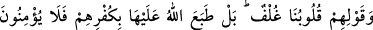

155- Sözlerinden dönmeleri, Allah’ın âyetlerini inkâr etmeleri, haksız yere
peygamberleri öldürmeleri ve «Kalplerimiz kılıflanmıştır.» demeleri sebebiyle
(onları lânetledik, türlü belâlar verdik. Onların kalpleri kılıflı değildir;) tam aksine
küfürleri sebebiyle Allah o kalpler üzerine mühür vurmuştur; pek azı müstesnâ
artık îman etmezler.
“Sözlerinden dönmeleri, Allah’ın âyetlerini” yâni Kur’an’ı veyâ yanlarında bulunan
kitap (Tevrat)’taki âyetleri “inkar etmeleri, haksız yere” Zekeriyyâ ve Yahyâ
(aleyhimesselâm) gibi “peygamberleri öldürmeleri ve Kalblerimiz kılıflanmıştır.”
demeleri sebebiyle lânet, hayvana çevirme ve başlarına gelen diğer cezâlarla onlara
veya peşlerinden gelen nesillere yapacağımızı yaptık.
Onların kalpleri, yaratılıştan perdelidir. Neredeyse Muhammed (a.s)’ın getirdiği
hakîkatler onlara ulaşamaz ve O’nun söylediklerini anlayamazlar. Yâhut da
“Kalplerimiz kılıflanmıştır.” ifâdesinin mânâsı: Kalplerimiz ilim doludur, sizin
anlatacağınız bilgilerden müstağnîyiz, demektir.
“Tam aksine küfürleri sebebiyle Allah kalbler üzerine mühür vurmuştur; Yâni,
onların küfür içinde bulunmaları kalplerinde kılıf olması dolayısıyle hakikatin oraya
ulaşmamasından değil, bilakis inkarları sebebiyle Allah’ın onların kalblerini
mühürlemesindendir. Onların zannettikleri gibi kalbleri doğuştan perdeli değildir.
Bilakis içinde bulundukları küfür sebebiyle Allah kalblerini mühürlemiştir.
Abdullah b. Selam ve benzerleri gibi “pek azı müstesnâ artık îman etmezler.” Yâhut
da az bir îmanla inanırlar ki, noksan olması hasebiyle buna îtibar edilmez. Çünkü
onların îmanı, peygamberlerin ve kitapların bâzısına inanmak, bâzısını inkar etmek
şeklindedir. Veyâ muteber olmayan bir şekilde inanırlar. Bundan dolayı onlara
“mü’min” denilemez. Onlar gerçek kâfirdirler.
Şunu bil ki ahdi bozmak, Yüce Yaratıcı’nın gazabını mûcib olur. Mü’min için gereken;
verdiği sözün îcaplarını yerine getirmektir. Belâlardan sâlim olmak, ancak ahde vefa ile
mümkün olur.
İbn Ömer (r. anhümâ)’ın şöyle dediği rivâyet edilmiştir: “Rasûlullah (s.a.v.)
yanımıza gelip şöyle buyurdu:
Ey muhâcirler topluluğu! Beş haslet vardır ki, size ulaşıp da onlarla imtihan
olunmanızdan Allah’a sığınırım.
1- Bir toplumda fuhuş çoğalır ve alenen işlenirse orada vebâ, salgın hastalıklar ve
mûsibetler önceden görülmemiş bir şekilde artar, çığ gibi büyür.
2- Ölçü ve tartıyı eksik tutarlarsa onlar yıllarca süren bir yokluğa, rızık darlığına
mâruz kalırlar ve idarecileri onlara haksızlık eder.